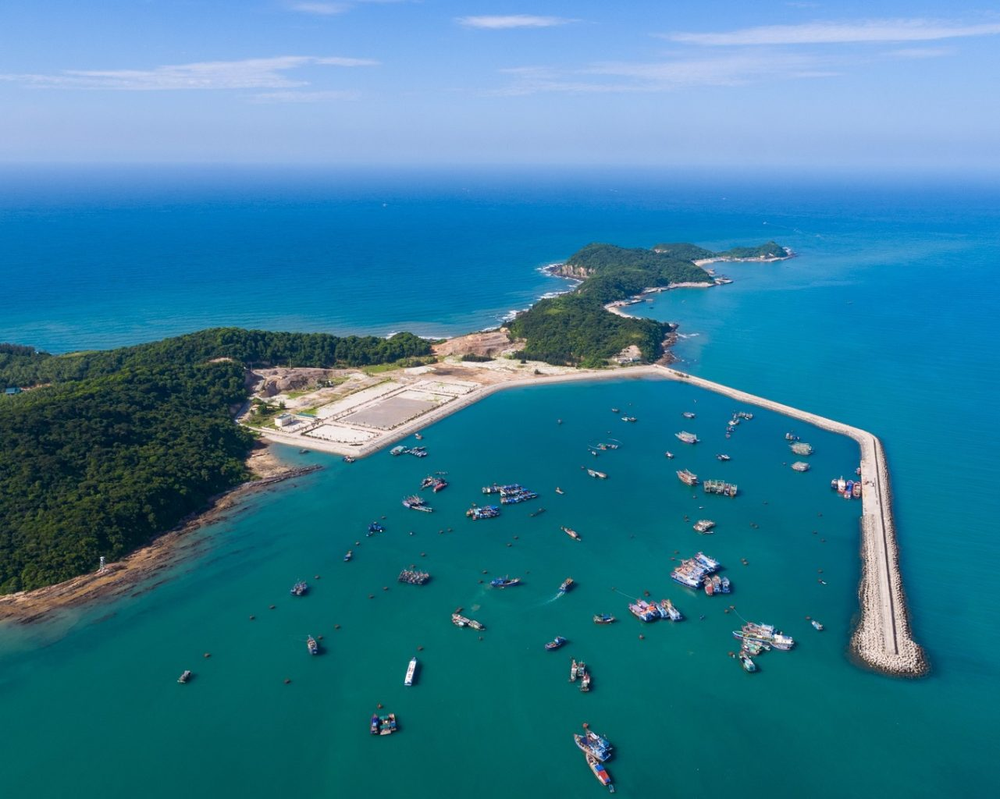
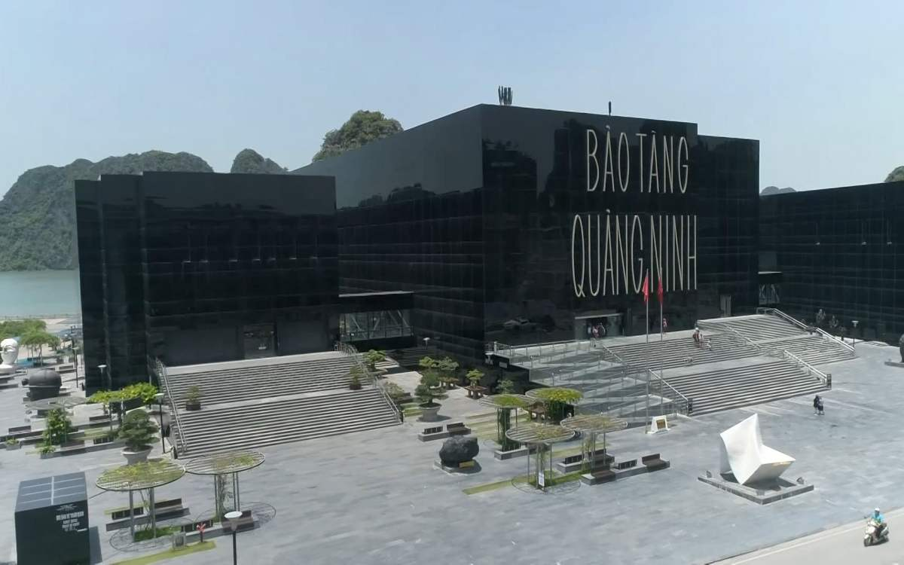
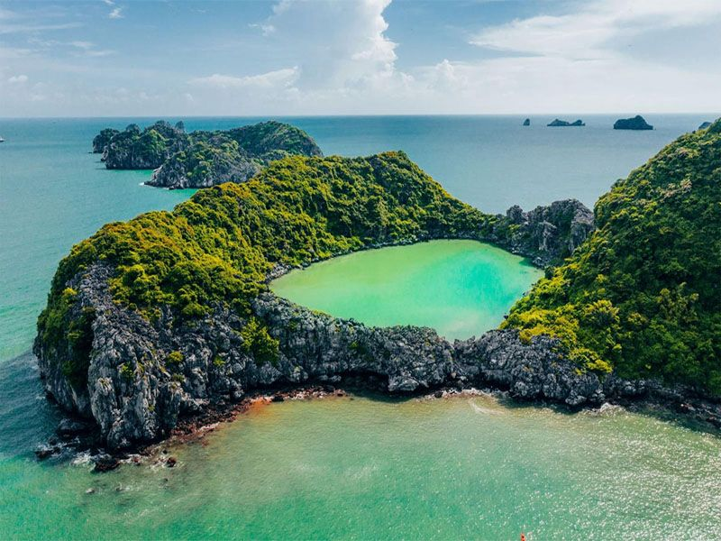
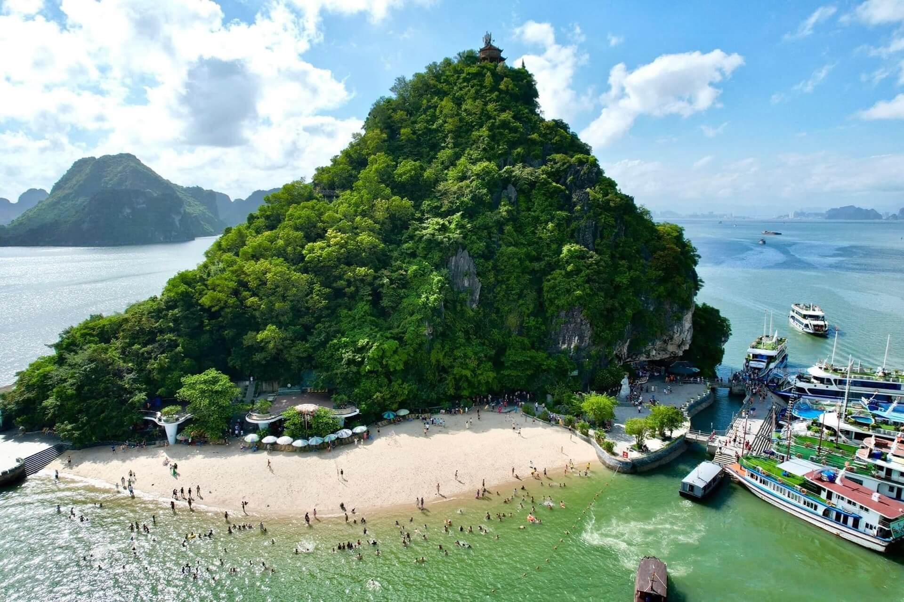

Vẻ đẹp thiên nhiên




Cô Tô là quần đảo nổi tiếng của tỉnh Quảng Ninh, được biết đến với những bãi biển trong xanh, bờ cát trắng mịn và cảnh quan thiên nhiên hoang sơ.
Hệ sinh thái biển phong phú cùng các bãi đá tự nhiên tạo nên vẻ đẹp đặc trưng. Nước biển xanh ngọc và không khí trong lành là điểm hấp dẫn du khách.
Du khách có thể tắm biển, chèo thuyền kayak, cắm trại, thưởng thức hải sản tươi sống và ngắm bình minh trên biển.